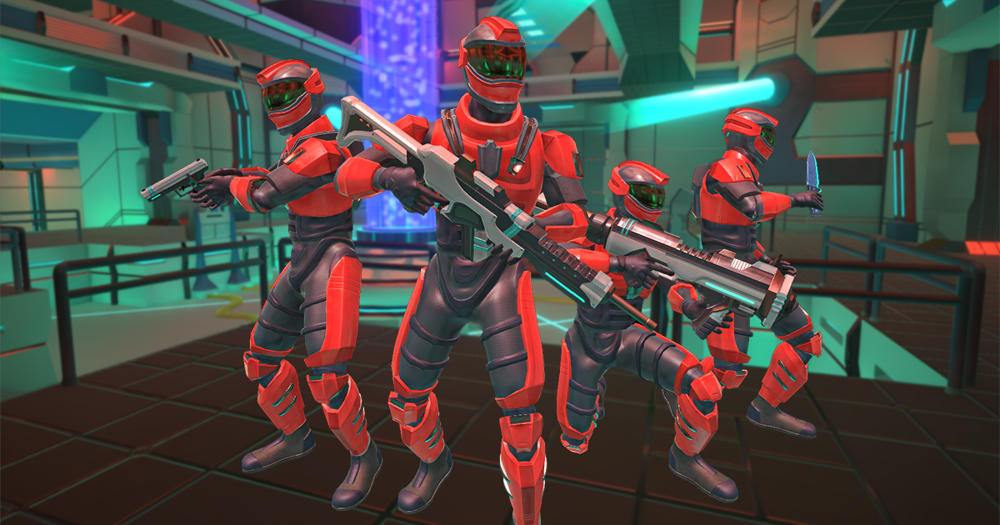
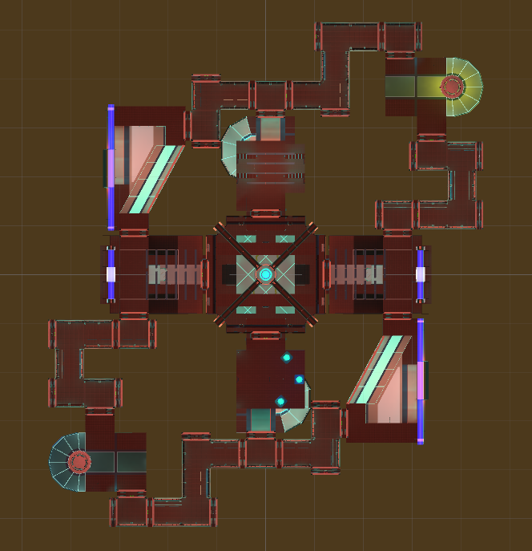
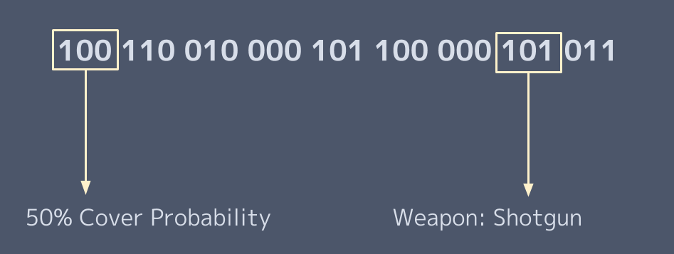

One of the reasons that balancing a game is so difficult is that it requires a lot of game testing and user feedback to identify problems, which can be expensive and time consuming. Actually fixing the problems in a game's mechanics requires in depth knowledge of the game, which can be biased as the developer has a different perspective of it than the end user.
What we propose to help deal with these difficulties is fairly simple conceptually; let AI agents play the game, with natural selection determining their behaviour traits. Eventually, local optimum AI parameters will emerge, which is already useful in itself, but going through this process also provides valuable data that can be used to analyze the AI, game mechanics, and levels.
The ideal canditate for our testing environment would be a simple deathmatch game with AI player implementation, all with accessible source code. Deathmatch works well for a genetic algorithm since the environment is perfectly suited for natural selection, and having access to the source code is required to implement the algorithm as the AI has to be modified. Luckily, we found just what we were looking for in the Deathmatch AI Kit from the Unity Asset Store.
The Deathmatch AI Kit by Opsive features a single map, a behaviour tree visual scripting tool, and a simple implementation of a third-person deathmatch shooter with AI opponents. While not as good as having an established game to work with, it would do for a proof-of-concept.
The next step was to implement the genetic algorithm. First, we looked for parameters in the behaviour tree of the AI that could be adjusted, as well as implementing some new parameters:
All of these parameters need to be encoded into "chromosomes", so that when an agent is given this chromosome, their parameters will be set in accordance. Each parameter is represented by a 3-bit number, which is expressed differently depending on the parameter. For example, health threshold values are in the range 0 - 100, and weapons are mapped explicitly to certain bit values.
Together, all of the parameters make up a 27-bit chromosome.
Once we had chromosomes, it was time to implement selection and crossover to complete the algorithm. More specifically, we used a version of the CHC genetic algorithm which worked better for smaller populations.
Steps 4 and 5 are then repeated until the population converges (ie. there is little variation in the population), at which point the algorithm restarts with the initial population being generated by flipping 35% of the bits of the highest scoring chromosome.